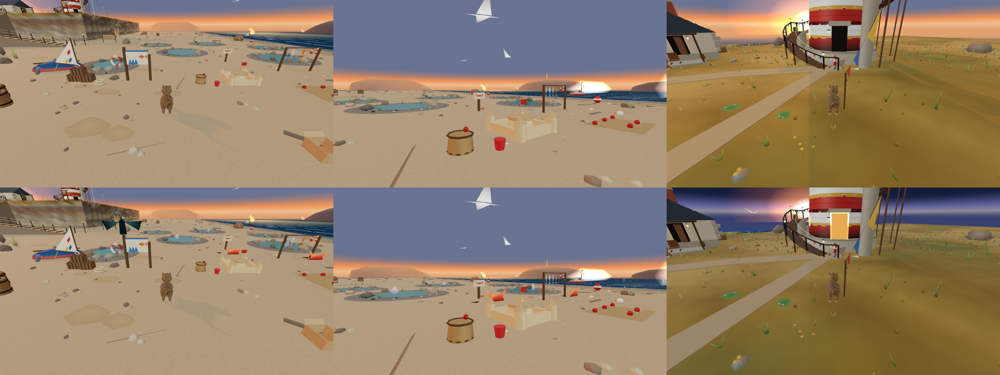

PLAY camera, tools/verify/verify-lighthouse.html (shots lb5_*; ?hour=23 for the night). Top row BEFORE (pass 4), bottom row AFTER. Column one: the arrival beach (a cormorant drying its wings on the harbour post; crabs by their holes, sandpipers on the wet edge, seals' heads in the bay). Column two: the CREATURE shot, two crabs out by the sandcastle (they run for their holes when she comes near). Column three: the tower door at night (the sky, light and horizon glow follow the real clock, and the door glows as she nears it). Whole scene 84,338 -> 84,270 triangles, meshes 219 and casters 46 unchanged.
